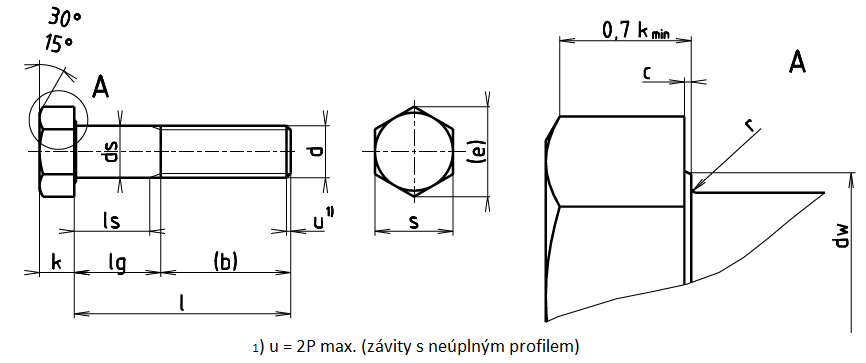

| d1) | M1,6 | M2 | M2,5 | M3 | M3,5 | M4 | M5 | M6 | M8 | M10 |
|---|---|---|---|---|---|---|---|---|---|---|
| P | 0,35 | 0,4 | 0,45 | 0,5 | 0,6 | 0,7 | 0,8 | 1 | 1,25 | 1,5 |
| b2) | 9 | 10 | 11 | 12 | 13 | 14 | 16 | 18 | 22 | 26 |
| cmin. | 0,1 | 0,1 | 0,1 | 0,15 | 0,15 | 0,15 | 0,15 | 0,15 | 0,15 | 0,15 |
| cmax. | 0,25 | 0,25 | 0,25 | 0,4 | 0,4 | 0,4 | 0,5 | 0,5 | 0,6 | 0,6 |
| ds min. | 1,46 | 1,36 | 2,36 | 2,86 | 3,32 | 3,82 | 4,82 | 5,62 | 7,78 | 9,73 |
| da max. | 2 | 2,6 | 3,1 | 3,6 | 4,1 | 4,7 | 5,7 | 6,5 | 9,2 | 11,2 |
| dw min. | 2,27 | 3,07 | 4,07 | 4,57 | 5,07 | 5,38 | 6,68 | 3,38 | 11,63 | 14,63 |
| emin. | 3,41 | 4,32 | 5,45 | 6,01 | 6,58 | 7,66 | 8,79 | 11,05 | 14,38 | 17,77 |
| Smax. | 3,2 | 4 | 5 | 5,5 | 6 | 7 | 6 | 10 | 13 | 16 |
| Smin. | 3,02 | 3,82 | 4,82 | 5,32 | 5,52 | 6,78 | 7,78 | 9,78 | 12,73 | 15,73 |
| k | 1,1 | 1,4 | 1,7 | 2 | 2,4 | 2,8 | 3,5 | 4,0 | 5,3 | 6,4 |
| Δk | 0,125 | 0,125 | 0,125 | 0,125 | 0,125 | 0,125 | 0,15 | 0,15 | 0,15 | 0,18 |
| rmin. | 0,1 | 0,1 | 0,1 | 0,1 | 0,1 | 0,2 | 0,2 | 0 | 5 | 4 |
| l | Δl | ls lg5) 6) | M1,6 | M2 | M2,5 | M3 | M3,5 | M4 | M5 | M6 | M8 | M10 | |
|---|---|---|---|---|---|---|---|---|---|---|---|---|---|
| 12 | ±0,35 | ls min. lg max. |
1,2 3 |
||||||||||
| 16 | ±0,35 | ls min. lg max. |
5,2 7 |
4 6 |
2,75 5 |
Pro délky uvedené nad lomenou čarou se užívají šrouby podle ISO 4017 | |||||||
| 20 | ±0,42 | ls min. lg max. |
8 10 |
6,75 9 |
5,5 8 |
4 7 |
|||||||
| 25 | ±0,42 | ls min. lg max. |
11,75 14 |
10,5 13 |
9 12 |
7,5 11 |
5 9 |
||||||
| 30 | ±0,42 | ls min. lg max. |
15,5 18 |
14 17 |
12,5 16 |
10 14 |
7 12 |
||||||
| 35 | ±0,5 | ls min. lg max. |
19 22 |
17,5 21 |
15 19 |
12 17 |
|||||||
| 40 | ±0,5 | ls min. lg max. |
22,5 26 |
20 24 |
17 22 |
11,75 18 |
|||||||
| 45 | ±0,5 | ls min. lg max. |
25 29 |
22 27 |
16,75 23 |
11,5 19 |
|||||||
| 50 | ±0,5 | ls min. lg max. |
30 34 |
27 32 |
21,75 28 |
16,5 24 |
|||||||
| 55 | ±0,6 | ls min. lg max. |
32 37 |
26,75 33 |
21,5 29 |
||||||||
| 60 | ±0,6 | ls min. lg max. |
37 42 |
31,75 38 |
26,5 34 |
||||||||
| 65 | ±0,6 | ls min. lg max. |
36,75 43 |
31,5 39 |
|||||||||
| 70 | ±0,6 | ls min. lg max. |
41,75 48 |
36,5 44 |
|||||||||
| 80 | ±0,6 | ls min. lg max. |
51,75 58 |
46,5 54 |
|||||||||
| 90 | ±0,7 | ls min. lg max. |
56,5 64 |
||||||||||
| 100 | ±0,7 | ls min. lg max. |
66,5 74 |
||||||||||